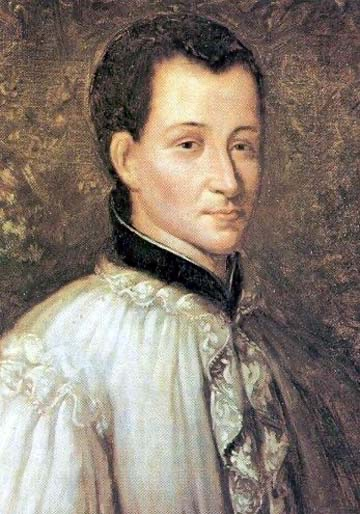

Misionari, pastiri i mistici (Pojedinačna proglašenja)
Svećenik
Sv. Klaudije La Colombière
1641. – 1682.
Kao duhovnik Margarete Marije Alacoque pridonio je širenju pobožnosti Srcu Isusovu. Pouzdanje u Kristovu ljubav nastojao je živjeti u propovijedanju, osobnim razgovorima, zatvoru i bolesti koja mu je skratila život.

Izvor slike
- Spomendan
- 15. veljače
- Zaštitništvo
- Nije navedeno u izvoru
- Životni vijek
- 1641. – 1682.
- Djelovanje
- Duhovno vodstvo i razlučivanje · Euharistija i pobožnosti · Bolest i osobne kušnje · Progoni i progonstvo
- Razdoblje
- 17. stoljeće
- Datum rođenja
- 02.02.1641.
- Mjesto rođenja
- Južna Francuska
- Datum smrti
- 15.02.1682.
- Mjesto smrti/mučeništva
- Paray-le-Monial, Francuska
- Okolnosti smrti/mučeništva
- Umro nakon bolesti s groznicom.
- Uloga
- Svećenik
- Mučenik
- Ne
- Ostale oznake
- Apostol Srca Isusova; Duhovnik Margarete Marije Alacoque; promicatelj pobožnosti Srcu Isusovu
- Pripadnost
- Isusovac
- Drugi oblici imena
- Klaudije de la Colombière · Claude La Colombière · Claude · Claude de la Colombière · Claude de la Colombiere
Životopis
U francuski gradić Paray-le-Monial Klaudije de la Colombière stigao je 1675. kao poglavar male isusovačke zajednice. U susjednome samostanu Pohođenja Marijina živjela je Margareta Marija Alacoque, redovnica uznemirena vlastitim duhovnim iskustvima i nepovjerenjem dijela okoline. Razgovori s njezinim novim ispovjednikom postali su važni za širenje pobožnosti Srcu Isusovu. Klaudije je u njezinim svjedočanstvima prepoznao poziv na pouzdanje u Kristovu ljubav, ali nije ostao tek potvrđivač tuđega iskustva. Tu je poruku živio u propovijedi, molitvi, zatvoru i bolesti koja mu je skratila život.
Rodio se 2. veljače 1641. u Saint-Symphorien-d’Ozonu u jugoistočnoj Francuskoj. Otac Bertrand bio je bilježnik; obitelj se poslije preselila u Vienne. Klaudije se školovao kod isusovaca u Lyonu i mlad odlučio pristupiti Družbi Isusovoj. U novicijat u Avignonu ušao je 1658., sa sedamnaest godina. Taj korak nije bio bez unutarnje borbe. U vlastitim je zapisima govorio o odbojnosti koju je morao nadvladati. Redovnički život započeo je, dakle, ne kao čovjek bez dvojbi, nego kao netko tko je poziv prihvatio unatoč njima.
Slijedile su godine učenja i poučavanja. U Avignonu je predavao gramatiku i književnost, a u Parizu studirao teologiju. Ondje je bio povezan i s uglednim krugovima: povjeren mu je odgoj djece ministra Jean-Baptistea Colberta. Za svećenika je zaređen 6. travnja 1669. Poslije je ponovno radio u Lyonu, poučavao i propovijedao. Suvremenici su cijenili jasnoću njegovih propovijedi. Umio je misao izreći odmjereno, bez potrebe da slušatelje zadivi samim govorničkim umijećem. U Francuskoj 17. stoljeća, u kojoj su se susretali snažni duhovni pokreti i strogi zahtjevi vjerskoga života, ta je jasnoća bila dragocjena.
Isusovačka formacija uključivala je razdoblja povlačenja, ispita vlastitih nakana i duhovnih vježbi. Klaudije je u takvu razdoblju 1674. produbio odluku da redovnička pravila živi savjesno. Njegov osobni zavjet velike vjernosti pravilima lako bi mogao zvučati kao puka strogost. U njegovim spisima, međutim, središnje mjesto zauzima pouzdanje u Boga. Čovjek se ne spašava vlastitom besprijekornošću, nego se otvara milosti i dopušta da ga Kristova ljubav mijenja. Upravo je to kasnije učinilo njegovu službu u Parayu osobito plodnom.
Kad je imenovan poglavarom isusovačke kuće u Paray-le-Monialu, postao je i ispovjednik redovnica Pohođenja Marijina. Među njima je bila Margareta Marija Alacoque. Ona je govorila o privatnim objavama u kojima ju je Krist pozivao da ljudima približi ljubav svojega Srca. Neke su sestre s nepovjerenjem gledale na njezina iskustva, a ona je teško podnosila nerazumijevanje. Klaudije ju je saslušao, molio i razlučivao. Uvjerio se da njezina svjedočanstva nose duhovno dobro te ju je podupirao. Nije zamijenio njezinu osobu niti se može reći da je on „osnovao” pobožnost Srcu Isusovu. Bio je svećenik koji je pomogao da njezin glas dopre do šire Crkve.
Sadržaj te pobožnosti nije samo prikaz probodenoga srca ili niz zasebnih molitava. Srce Isusovo govori o osobi Krista koji ljubi, oprašta i ostaje blizu čovjeku. Margareta Marija prenosila je i želju za posebnim blagdanom nakon svetkovine Tijelova. Klaudije je u njoj prepoznao poziv na euharistijsku zahvalnost, obraćenje i naknadu za ravnodušnost prema Božjoj ljubavi. U svojim je propovijedima i pismima naglašavao pouzdanje, a ne strah. Pobožnost nije gradila novu vjeru uz evanđelje: budila je pozornost za ono što evanđelje već govori o Kristovoj blizini ljudima.
Takav je naglasak imao posebnu snagu u vremenu u kojemu su neki oblici vjerske strogosti ljude navodili da u Bogu ponajprije vide suca. Klaudije nije poricao ozbiljnost grijeha ni potrebu za obraćenjem. Ali nije želio da se vjernik pred vlastitom slabošću zatvori u očaj. Njegovi duhovni zapisi vraćaju se Kristovu životu, muci i milosrđu. Predanje Bogu za njega nije bilo povlačenje od odgovornosti: učio je, propovijedao i donosio odluke, a ishod nije smatrao isključivo svojim djelom. Ta se crta njegove duhovnosti može pratiti od redovničke formacije do posljednjih bolesnih godina. Kad je drugima govorio o Srcu Isusovu, nije im nudio lako obećanje života bez kušnje, nego razlog da i u kušnji ostanu pred Kristom.
Njegov boravak u Parayu trajao je kratko. U listopadu 1676. poslan je u Englesku kao propovjednik i duhovnik Marije Modenske, vojvotkinje od Yorka, supruge budućega kralja Jakova II. Katolička kapela na dvoru svetoga Jakova bila je dopuštena, ali u zemlji su vjerske napetosti bile snažne. Klaudije je ondje propovijedao, ispovijedao i nastavio dopisivanje s Margaretom Marijom. Govorio je o Kristovu Srcu i u dvorskome okružju, gdje se od duhovnika moglo očekivati da govori odmjereno i da poznaje granice svojega položaja. Za njega to nije bila druga poruka nego isto evanđelje izrečeno ljudima u drukčijim okolnostima.
Godine 1678. Englesku je zahvatio strah od navodne „papističke zavjere”. Tvrdnje Titusa Oatesa o katoličkom planu za rušenje kralja bile su lažne, ali su izazvale uhićenja i protukatoličko nasilje. Klaudije je u studenome optužen za nelojalnost i zatvoren. Nije ga zaštitio ni položaj na dvoru. U tamnici se teško razbolio; zdravstvene tegobe, osobito plućna bolest, pratile su ga i nakon oslobođenja. Poslije približno mjesec dana pušten je na slobodu, a 1679. morao je napustiti Englesku. Iza dvorskoga propovjednika ostao je iscrpljen čovjek koji se polako vraćao u Francusku.
U Lyon je stigao u ožujku 1679. Ondje je pomagao u odgoju mlađih isusovaca. I dalje je pisao, molio i govorio o pouzdanju u Boga, premda ga je bolest ograničavala. Dio njegovih zapisa, osobito duhovni dnevnik i pisma, ostao je važan za razumijevanje kako je povezivao zahtjevnu osobnu stegu s nadom u Božje milosrđe. Njegova se pobožnost nije razvijala samo u izvanrednim susretima u Parayu; rasla je i u svakodnevici poučavanja te u slabosti nakon engleskoga zatvora. Poglavari su ga 1681. ponovno poslali u Paray-le-Monial, nadajući se da će ondje lakše predahnuti. Nije ozdravio. Početkom 1682. stanje mu se pogoršalo, a 15. veljače umro je, tek nekoliko dana nakon četrdeset prvoga rođendana. Njegova je služba obuhvatila učionicu, propovjedaonicu, ispovjedaonicu i zatvor; završila je ondje gdje je jedna redovnica nekoć našla svećenika koji ju je ozbiljno saslušao.
Papa Pio XI. proglasio ga je blaženim 16. lipnja 1929., a papa Ivan Pavao II. svetim 31. svibnja 1992. Spomendan mu je 15. veljače. U homiliji na kanonizaciji Ivan Pavao II. istaknuo je njegovu vjernost isusovačkom pozivu i poruku o Kristovoj milosrdnoj ljubavi. To su dva lica istoga života: disciplina nije ugušila ljubav, a govor o ljubavi nije ga oslobodio služenja i trpljenja. Klaudije de la Colombière ostaje jedan od važnih svjedoka pobožnosti Srcu Isusovu upravo zato što je o pouzdanju govorio i kada vlastita sigurnost više nije bila u njegovim rukama.
Život i nasljeđe
Klaudijevu londonsku službu treba razumjeti u posebnom položaju katoličke dvorske kapele. Marija Modenska mogla je imati vlastitoga kapelana iako katolička vjera nije uživala jednaku javnu slobodu kao državna Crkva. Kapelan je dolazio iz inozemstva, pa je Klaudije istodobno bio redovnik na poslanju i francuski podanik u engleskome političkom okruženju. Taj mu je položaj pružao određenu zaštitu, ali ga nije mogao sasvim odvojiti od širega nepovjerenja prema katolicima.
Isusovački životopis navodi da je dojava protiv njega potekla od Francuza kojemu je pomagao, a koji je očekivao nagradu za prijavu. U takvu je ozračju privatni odnos mogao postati put do državne optužbe. Njegov je zatvor trajao približno mjesec dana, ali je hladnoća teško oštetila već narušeno zdravlje. Povratak u Francusku nije bio brz oporavak: putovao je s prekidima, zaustavljajući se kada više nije imao snage nastaviti.
Uz osobno duhovno vodstvo ostavio je i pisanu baštinu. Sačuvane su duhovne bilješke, razmatranja o Kristovoj muci, propovijedi i pisma. U kasnijim su stoljećima sabirana u izdanja njegovih djela, među njima u Avignonu i Parizu. Njegov se utjecaj zato nastavio i među čitateljima koji nisu poznavali Paray-le-Monial niti okolnosti njegova engleskog boravka. Kratka osobna služba dobila je mnogo dulji život kroz pisanu riječ.
Razlika između njegovih vlastitih zapisa i kasnijih svjedočanstava Margarete Marije važna je za čitanje te baštine. On nije autor svih izvještaja o njezinim iskustvima, nego njihov duhovni pratitelj i jedan od prvih zagovornika poruke o Kristovoj ljubavi. Njihova je suradnja nastavljena i pismima nakon njegova odlaska iz Paraya. Time se pokazuje kako duhovna pratnja može nadilaziti mjesto boravka: razlučivanje, ohrabrenje i provjera nisu završili prvim susretima. Na njegovu grobu i u sačuvanim djelima ostala je uspomena na čovjeka čija je pouka o pouzdanju bila povezana s vlastitim iskustvom oskudice, bolesti i nesigurnosti.
Pročitaj više na izvornoj stranici ↗